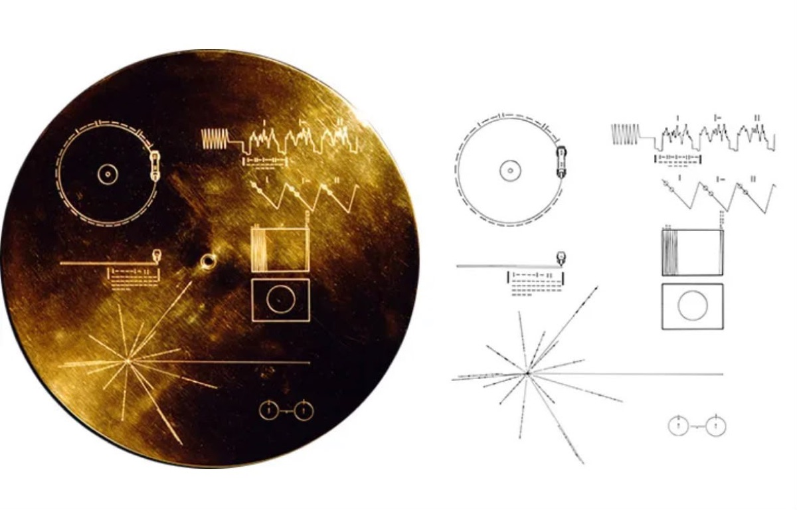
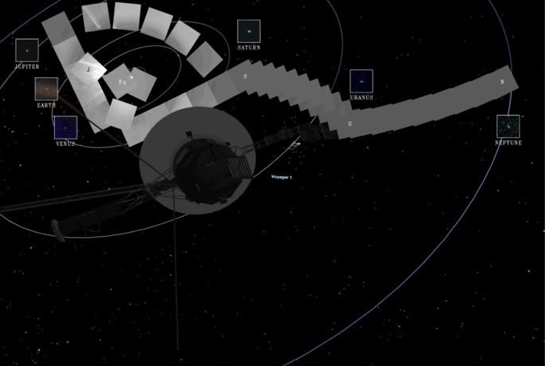
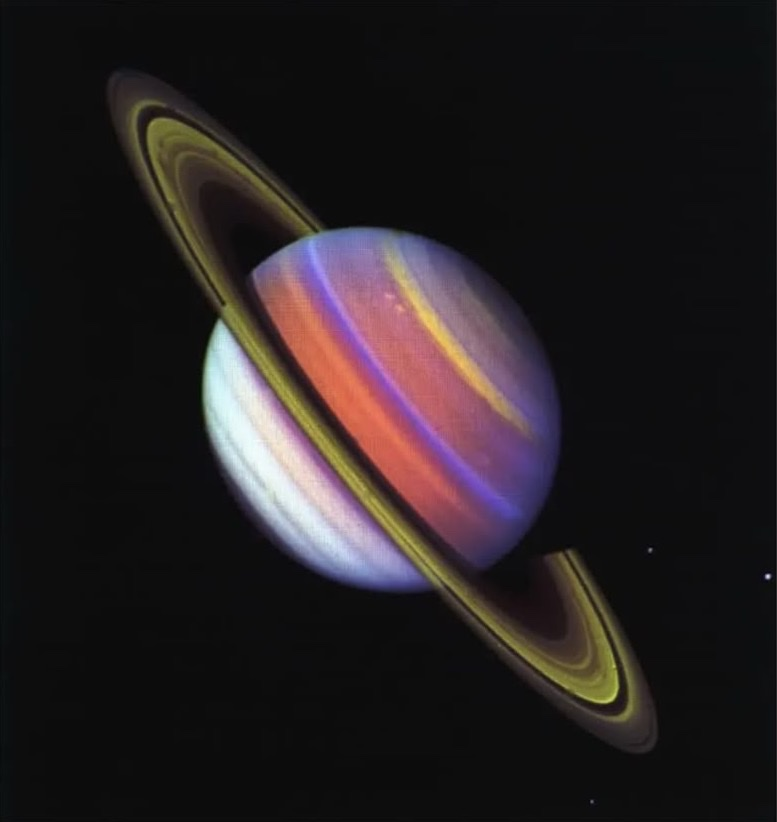
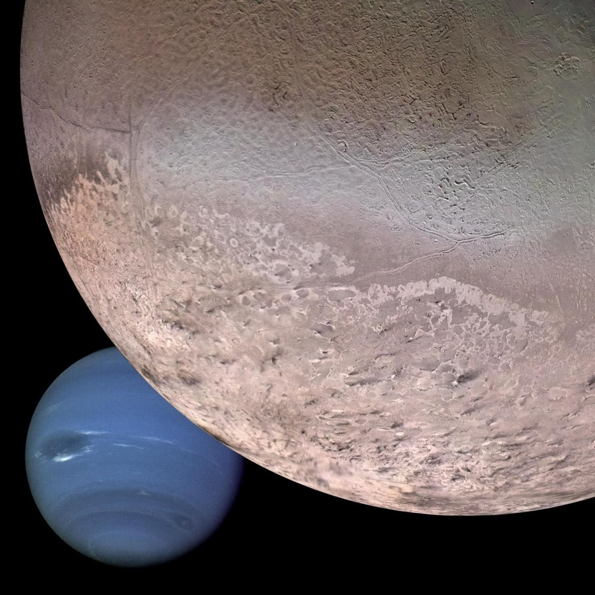

مركبة فويجر
أبعد جسم صنعه الإنسان
فريق فوياجر: جوري، سارة، جود
تعريف بالمركبة
كيف بدأت أعظم رحلة استكشاف بشرية؟
فويجر (Voyager) مسبار فضائي آلي أطلقته وكالة ناسا عام ١٩٧٧ في مهمة بدأت باستكشاف الكواكب الخارجية (المشتري وزحل)، وتحول اليوم إلى أبعد جِسم ومقذوف من صنع البشر في تاريخ الكون.
ماذا وجد هذا المختبر الفيزيائي في ظلام الكون؟
إنها ليست مجرد آلة، بل هي مختبر فيزيائي طائر وسفيرنا السابح في الظلام السحيق، يعمل بكفاءة منذ نصف قرن متحديًا الزمن والمسافات؛ فحين تخطى المسبار حدود الغلاف الشمسي (Heliosphere) ليدخل رسميًا في الوسط النجمي (Interstellar Space) عام ٢٠١٢، بدأ في رسم خريطة للكون الذي لم نصله بعد.
كيف نتواصل مع مسبار يبتعد عنا مليارات الكيلومترات؟
تبتعد فويجر عنا الآن مسافة تتخطى ٢٥ مليار كيلومتر عن الأرض وتتحرك بسرعة تقارب ٦١٬٠٠٠ كم/ساعة، مرسلة إلينا بيانات فيزيائية حية من أعمق نقاط الفضاء عبر إشارات لاسلكية خافتة تستغرق نحو يوم كامل لتصل إلينا.
١٩٧٧سنة الإطلاق
٢٥ ملياركيلومتر عن الأرض
٦١٬٠٠٠كم في الساعة
كيف تعمل إلى يومنا الحالي
من أين تأتي طاقتها؟
نظرًا لبعد المركبة الشديد عن الشمس، أصبحت الألواح الشمسية بلا فائدة؛ لذا تُزوَّد فويجر بمولّدات الحرارة النظائرية (RTG)، وهي عبارة عن بطاريات نووية حرارية.
طريقة عملها: تحتوي على مادة البلوتونيوم-٢٣٨ التي تتحلل طبيعيًا وتصدر حرارة عالية مستمرة، ثم يحوّل المولّد هذه الحرارة مباشرة إلى تيار كهربائي يشغّل أجهزة المركبة دون الحاجة لأي محركات أو أجزاء متحركة.
كيف لم تتجمد رغم وجودها في الفضاء؟
تصل درجة الحرارة في الفضاء بين النجمي إلى ٢٦٩ درجة تحت الصفر (بالقرب من الصفر المطلق!)، ولحماية المركبة من التجمد:
- المدافئ الكهربائية المدمجةصُممت فويجر بمدافئ حرارية صغيرة تحيط بالأجهزة الحساسة والأنابيب لإبقائها ضمن نطاق حراري يعمل بداخلها.
- استغلال حرارة المولّدتُستغل الحرارة الجانبية المنبعثة من بطارية البلوتونيوم لتدفئة الهيكل الداخلي للمركبة.
- إدارة الطاقة الذكية مع الزمنمع تراجع طاقة البلوتونيوم تدريجيًا عبر العقود، يقوم مهندسو ناسا بإيقاف الأجهزة غير الضرورية والمدافئ عن الأجزاء الثانوية (مثل الكاميرات التي أُغلقت عام ١٩٩٠)، وذلك لتركيز الطاقة والحرارة المتبقية فقط على الأجهزة الحيوية لتبقى دافئة وتستمر في العمل وإرسال البيانات.
ماذا لو عثرت مخلوقات أخرى على المركبة؟
القرص الذهبي
أرسلت ناسا فويجر ١ و٢ ووضعت على كل مركبة قرصًا ذهبيًا يحتوي على صور وأصوات من الأرض مثل أصوات الطبيعة والحيوانات والموسيقى، بالإضافة إلى تحيات بأكثر من ٥٠ لغة، وذلك لإعطاء فكرة عن الحياة والثقافات الموجودة على كوكبنا.

القرص الذهبي وتعليمات تشغيله. الصورة: ناسا/مختبر الدفع النفاث (JPL)
التحية بالعربيةتحياتي لأصدقائنا في النجوم، نتمنى أن نلتقي بكم في يوم من الأيام.
وكان الهدف الأساسي منها أنه إذا وُجدت إحدى هذه المركبات بعد زمن طويل، فسيجد معها رسالة تخبره من نحن ومن أين أتينا وكيف تبدو الحياة على الأرض.
كيفية وصول الصور إلينا
من الفضاء العميق إلى شاشتك
تُرسل مركبة فويجر المعلومات إلى الأرض باستخدام موجات الراديو، حيث تُجمع المعلومات وتُحوَّل إلى أصفار وواحدات ثم يرسلها الهوائي نحو الأرض. ويستقبل نظام متطور يسمى شبكة الفضاء العميق الإشارة الضعيفة ويحولها إلى صور وبيانات مفهومة. وتستغرق الإشارة من فويجر أكثر من ٢٢ ساعة للوصول إلى الأرض.
بعض الصور التي التقطتها المركبة

محاكاة حاسوبية لمسار فويجر وفسيفساء صور «الصورة العائلية». المصدر: ناسا
صورة عائلية لنظامنا الشمسيالتقطت فويجر أول «صورة عائلية» لنظامنا الشمسي يومي ١٣ و١٤ فبراير ١٩٩٠ من مسافة نحو ٦ مليارات كيلومتر عن الشمس، بعد أن التفتت بأمر من القائمين على المهمة لتصوير الأرض. التقطت ٦٠ صورة ثم أُغلقت كاميراتها نهائيًا لتوفير الطاقة. ولم يظهر كلٌّ من عطارد والمريخ وبلوتو لصعوبة رصدها بسبب قربها من الشمس أو صغرها وبعدها.

زحل بألوان مركّبة. الصورة: ناسا/مختبر الدفع النفاث (JPL)
زحلصورة لزحل التقطها مسبار فويجر في ١٢ يوليو ١٩٨١، من مسافة ٤٣ مليون كيلومتر، أُنتجت بدمج ثلاث صور باستخدام فلاتر فوق بنفسجية وبنفسجية وخضراء. وتُظهر تغيرات في غلاف زحل مقارنة برصد فويجر، مع زيادة واضحة في سطوع الحلقات بسبب ارتفاع زاوية سقوط أشعة الشمس.

ترايتون ونبتون. الصورة: ناسا/مختبر الدفع النفاث (JPL)
نبتونتُظهر هذه الصورة المركبة، التي أُنشئت بواسطة الحاسوب من صور التقطها مسبار فويجر ٢ التابع لناسا، كوكب نبتون كما يبدو من مركبة فضائية تقترب من ترايتون، أكبر أقمار نبتون، والذي يبلغ قطره ٢٧٠٦ كم (١٦٨٣ ميلًا).
تعرّفوا على ركن آخر من أركان الأسبوع الفلكي